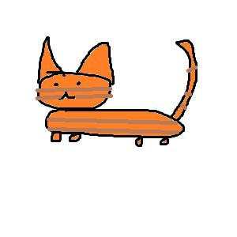
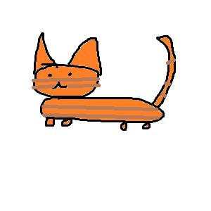

Artykuł 1
Crazy? I Was Crazy Once. They Locked Me In A Room. A Rubber Room. A Rubber Room With Rats. And Rats Make Me Crazy.
Crazy? I Was Crazy Once. They Locked Me In A Room. A Rubber Room. A Rubber Room With Rats. And Rats Make Me Crazy
Crazy? I Was Crazy Once. They Locked Me In A Room. A Rubber Room. A Rubber Room With Rats. And Rats Make Me Crazy.
Crazy? I Was Crazy Once. They Locked Me In A Room. A Rubber Room. A Rubber Room With Rats. And Rats Make Me Crazy
Crazy? I Was Crazy Once. They Locked Me In A Room. A Rubber Room. A Rubber Room With Rats. And Rats Make Me Crazy. Crazy? I Was Crazy Once. They Locked Me In A Room. A Rubber Room. A Rubber Room With Rats. And Rats Make Me Crazy. Crazy? I Was Crazy Once. They Locked Me In A Room. A Rubber Room. A Rubber Room With Rats. And Rats Make Me Crazy.
Crazy? I Was Crazy Once. They Locked Me In A Room. A Rubber Room. A Rubber Room With Rats. And Rats Make Me Crazy. Crazy? I Was Crazy Once. They Locked Me In A Room. A Rubber Room. A Rubber Room With Rats. And Rats Make Me Crazy. Crazy? I Was Crazy Once. They Locked Me In A Room. A Rubber Room. A Rubber Room With Rats. And Rats Make Me Crazy. Crazy? I Was Crazy Once. They Locked Me In A Room. A Rubber Room. A Rubber Room With Rats. And Rats Make Me Crazy.
Crazy? I Was Crazy Once. They Locked Me In A Room. A Rubber Room. A Rubber Room With Rats. And Rats Make Me Crazy. Crazy? I Was Crazy Once. They Locked Me In A Room. A Rubber Room. A Rubber Room With Rats. And Rats Make Me Crazy.
Crazy? I Was Crazy Once. They Locked Me In A Room. A Rubber Room. A Rubber Room With Rats. And Rats Make Me Crazy. Crazy? I Was Crazy Once. They Locked Me In A Room. A Rubber Room. A Rubber Room With Rats. And Rats Make Me Crazy.
Crazy? I Was Crazy Once. They Locked Me In A Room. A Rubber Room. A Rubber Room With Rats. And Rats Make Me Crazy.